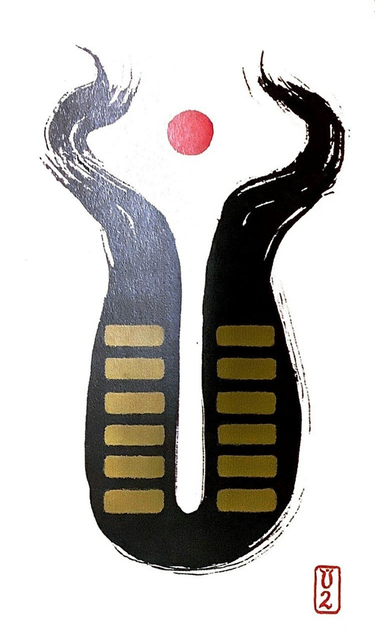

중지곤(땅 곤)
평괘 1
부드럽고 유순한 덕으로 하늘의 일을 돕고 만물을 양육한다
아이를 잉태하는 자궁을 나타낸 그림으로세상 만물을 품어주는 넓고 너그러운 대지다
수용.순응.헌신.참다.인내하다.부양하다.순종적이다흙.포용.민감.직관력.어머니.유연.조용.안정적.외유내강정적인 모습. 부드럽다.내부로 수렴하는 음 에너지의 집합체
연애운
신뢰가 두터운 관계.안정적.서로 존중 존경하는 연애
사업운
내실을 더 튼튼하게 다지기.지금을 유지하기.변화는 좋지 않다
속마음
썸소극적이고 시간을 두고 지켜보자는 마음
1년 이상자상하게 받아주려는 마음. 안정적인 마음
이별 후참고 속앓이하나 움직이려고는 하지 않고 기다린다
솔로연애운
새로운 이성 생길 확률 적다
성향
남 - 소극적 이야기.잘들어주고 자상.속을 알수가 없다 말을 잘하지 않는다.가정적.신중.답답.여자같은 성향 여 - 다소곳 살림 잘하고 감정을 먼저 이야기 하지 않는다
건강운
내부장기기관.대장.폐.자궁.홧병